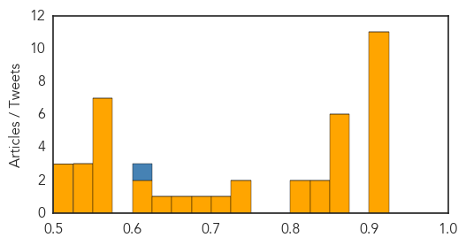

Mold/Fungal
30-Day Web Trend
0 alerts, 0 warnings
30-Day Twitter Trend
0 alerts, 0 warnings

Article Locations

Article Confidences

Top Articles:
-
No articles found for Feb 10, 2015
Top Tweets:
-
No tweets found for Feb 10, 2015
Unknown
30-Day Web Trend
0 alerts, 0 warnings
30-Day Twitter Trend
2 alerts, 0 warnings
Article Locations
Article Confidences
Top Articles:
- 0.917
- Chicago Tribune
- 0.917
- Chicago Tribune
- 0.917
- Chicago Tribune
- 0.917
- Chicago Tribune
- 0.917
- Chicago Tribune
- 0.917
- Chicago Tribune
- 0.917
- Chicago Tribune
- 0.917
- Chicago Tribune
- 0.917
- Chicago Tribune
- 0.915
- Melbourne man contracts rare and potentially fatal Japanese encephalitis virus in Bali
- 0.910
- The world windows to Thailand
- 0.866
- Pentagon chief offers condolences after U.S. hostage's death
- 0.866
- Ukrainian forces launch offensive near Mariupol, east Ukraine
- 0.866
- Western moves aimed at destabilising situation in Ukraine
- 0.866
- Over 600 Russian troops start exercises in Crimea
- 0.866
- Ukraine's Poroshenko asks parliament to agree to dismiss General Prosecutor
- 0.866
- Polish defence minister says supplying arms to Ukraine is last option
- 0.833
- Melbourne man struck down with deadly Japanese encephalitis following trip to Bali
- 0.828
- Diarrhoea breaks out in Kurigram, number of child patients on rise
- 0.821
- Bali brain bug prompts health warning
- 0.819
- West Texas News
- 0.742
- CNY Health experts to warn of significant spike in Syphilis cases
- 0.727
- PED in Ontario a year later
- 0.703
- Ghana, Business Advice, Jobs, News, Business Directory, Real Estate, Finance, Forms, Auto
- 0.676
- Little Cherry Virus checks reveal extent of disease
- 0.659
- New foot-and-mouth case
- 0.629
- Govt orders probe into death of children in Sylhet hospital
- 0.614
- Observer
- 0.601
- Uganda crippled by medical brain drain
- 0.572
- Mission to spread biosecurity message
- 0.551
- Obama confirms death of US hostage Kayla Mueller
- 0.551
- Russia to help build Egypt’s first nuclear power plant
- 0.551
- NYC officer indicted for fatal shooting of unarmed black man
- 0.551
- French baby-swap families win €1.9m in damages
- 0.551
- Assad: Syria ‘informed’ about US-led strikes on IS group
- 0.550
- After fluoride, how lithium could be put in tap water to beat depression
- 0.547
- WCAX.COM Local Vermont News, Weather and Sports-
- 0.538
- U.Va. med center restores regular visitation as flu declines
- 0.536
- H5N6 avian flu fatality in ...｜Society｜WCT
- 0.520
- Wet Season Brings Spike In Malaria
- 0.510
- Travellers' antibiotics may do more harm than good
- 0.506
- Covenant finishes pilot study on remote monitoring
Top Tweets:
- 0.611
- RT: Ppl w/diabetes are at risk of flu complications. If you have flu-like symptoms contact your doc right away h…